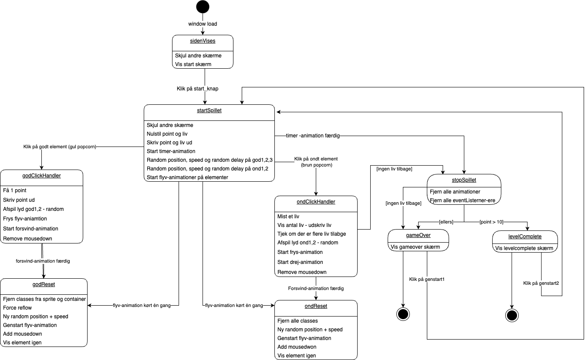

TEMA 04
GRUNDLÆGGENDE ANIMATION
I tema 04, Animation, har jeg arbejdet med at designe, tegne, animere og programmere mit eget spil. I dette tema har jeg både lært og arbejdet med Adobe Illustrator til at designe og tegne spilelementerne. Derudover har jeg lært programmeringssproget JavaScript samt arbejdet med CSS-animationer for at kunne skabe og kode mit spil helt fra bunden.

IDE-
UDVIKLING
Først brainstormede jeg idéen til mit spil. Jeg besluttede at lave et spil om en karakter ved navn "Pelle-Pop", hvor brugeren skal hjælpe Pelle-Pop med at lave gode popcorn. Min spilidé lød således: Hjælp Pelle med at poppe hans popcorn til filmaften! Historien bag er, at Pelle er alene hjemme og har inviteret Ingemarie på besøg til ’Netflix & Chill’ med tilhørende popcorn! Spillerens opgave er at hjælpe Pelle med at lave de bedste popcorn – men pas på de brændte popcorn, da de kan give kræft!
Reglerne for spillet er som følger:
- Klik på de gode popcorn for at få point. Få så mange point som muligt, inden tiden løber ud.
- Klikker du på en brændt popcorn, mister du et liv.
- Du har i alt 3 liv og 30 sekunder til at opnå 10 point eller mere.
Efter at have udviklet spilidéen valgte jeg en visuel stil, jeg ville bruge til at tegne og designe mit spil. Jeg besluttede mig for stilen "TWO DOTS". Derefter begyndte jeg at skitsere mit design ud fra denne stil.
PROTOTYPE
Jeg lavede en papirprototype af spillet for at visualisere og få overblik over spilforløbet og designet.
Spilskærm start:
Her skal der også være en infoboks samt kan man starte spillet ved at trykke ”play” på tv’et.
Nu er spillet i gang:
Her flyver popcornene nedefra og op af en gryde. Både gode og dårlige.
Liv vises med gode popcorn. Mister du et liv bliver det vist med en brændt popcorn.
Vundet:
Her har man vundet og Pele er glad. Firkanten her blinkende lys hvori der står lidt tekst.
Hvis man taber derimod, vil hans ansigtsudtryk være ked af det.
DESIGN
Herefter gik jeg i gang med at designe elementerne til spillet i Adobe Illustrator. Jeg designede både min karakter, Pelle-Pop, startskærm og slutksærm, og UI-elementerne.
Min karakter, glad og ked af det alt efter om man vinder eller taber:
Mine gode og dårlige elementer:
Mine UI-element:
Mine skærme:
Startskærm:
Slutksærm ved tab:

Slutskærm ved vind:

Min spilbaggrund:
DIAGRAMMER

Dernæst lavede jeg et aktivitetsdiagram, som illustrerede spilforløbet og viste, hvad der sker, når man klikker på de forskellige elementer.
Til sidst udarbejdede jeg et state-machine-diagram, som detaljeret beskrev spilforløbet. Diagrammet indeholdt alle elementer, deres animationer, lyde, tidsstyring samt hvilke elementer, der giver point, og hvilke der koster liv, når man klikker på dem.
